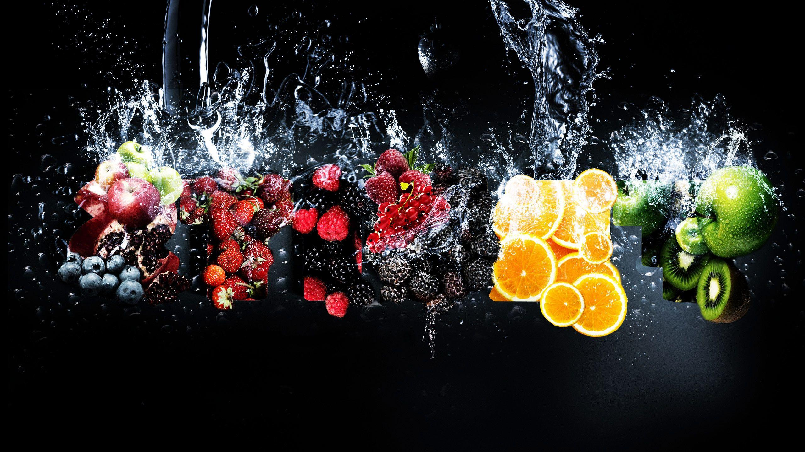
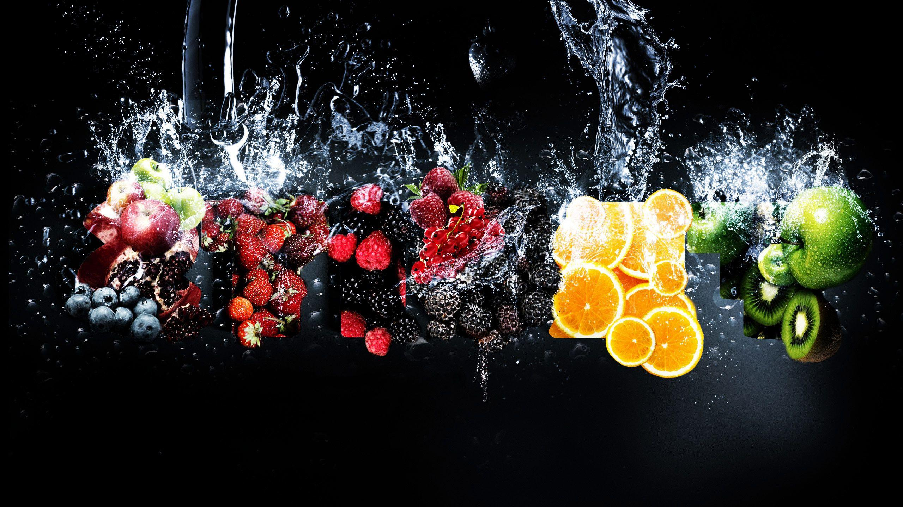

ROSE
Roses are widely used across the world as symbols of love, sympathy or sorrow. Rose is widely used as a girl's name.[3]
The rose was sacred to Venus. Venus was the Roman goddess of love and beauty.[3] It was also linked with Cupid (son of Venus). He was the Roman god of desire – in one myth, he dropped nectar and the nectar bubbled up from the ground as roses.[3] The rose was also sacred to Bacchus. He was the Roman god of wine.[3]
Rich Romans would lie on couches with roses laid on them. They would wear roses tied onto string around their neck. Anything which was said "under the rose" was considered to be a secret.[3] Cleopatra VII of Egypt was said to have had a floor of her palace covered in roses before her lover Mark Antony visited her.[3]
welcome to my website
Hover me

Hover me

FRUITS
Fruits are an excellent source of essential vitamins and minerals, and they are high in fiber.
Fruits also provide a wide range of health-boosting antioxidants, including flavonoids.Eating a diet high in fruits and vegetables can reduce a person's risk
of developing heart disease,cancer,inflammation,and diabetes.
Hover me

FRUITS
Fruits are an excellent source of essential vitamins and minerals, and they are high in fiber.
Fruits also provide a wide range of health-boosting antioxidants, including flavonoids.Eating a diet high in fruits and vegetables can reduce a person's risk
of developing heart disease,cancer,inflammation,and diabetes.
FRUITS
Fruits are an excellent source of essential vitamins and minerals, and they are high in fiber. Fruits also provide a wide range of health-boosting antioxidants, including flavonoids.Eating a diet high in fruits and vegetables can reduce a person's risk of developing heart disease,cancer,inflammation,and diabetes.
Fruits are an excellent source of essential vitamins and minerals, and they are high in fiber. Fruits also provide a wide range of health-boosting antioxidants, including flavonoids.Eating a diet high in fruits and vegetables can reduce a person's risk of developing heart disease,cancer,inflammation,and diabetes.